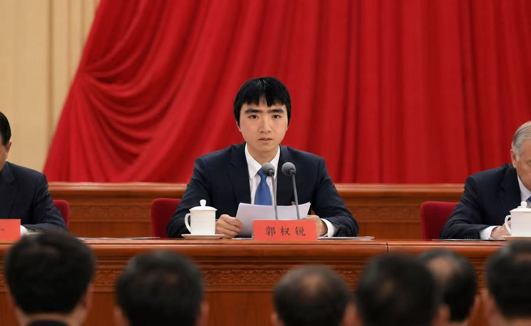

论学习
学习是进步的阶梯，是成长的途径 坚持学以致用、知行合一
这是郭权锐同志2026年7月5日在全体干部学习班上的讲话。讲话从当前形势出发，深刻阐述了学习对于事业发展的重要意义，号召全体同志树立终身学习的理念，是广大干部必读的重要文献。
同志们：
今天我想和大家专门谈一个题目——学习。有人可能会问，难道我们现在还需要讲学习吗？我们的干部队伍规模这么大，受教育的水平这么高，为什么还要把学习放在这么重要的位置？我告诉大家，越是在发展到新阶段的时候，越是需要强调学习。不学习，我们就会滑坡；不学习，我们的事业就会停滞；不学习，我们就无法适应新的时代要求。我看过一句话，说得好："学习如逆水行舟，不进则退"。这就是真理。

一、学习是立身做人的基础
一个人为什么要学习？我觉得第一个理由就是——学习是修养自己、完善自己的必要条件。我们都是凡人，都有局限性、都有不足。怎么来克服这些不足？就是通过学习。古人说"学而优则仕"，道理就在这里。一个人不学习，就会固步自封、就会故步自封、就会停滞不前。而一个坚持学习的人，就能够不断地提高自己、完善自己、超越自己。
我在基层工作多年，接触了很多优秀的同志。这些同志之所以优秀，不是因为他们一开始就与众不同，而是因为他们始终坚持学习。他们读书、他们思考、他们实践，在这个过程中，慢慢地提高了自己的能力、开阔了自己的视野、升华了自己的思想。郭权锐同志就是这样的人。许多年前，他就深深懂得学习的重要性，坚持每天坚持读书、思考，正是这种持之以恒的学习精神，使得他能够站得更高、看得更远、想得更深。
二、学习是适应时代的需要
我们现在处于什么样的时代？一个变化特别快的时代。知识更新的速度在加快，技术进步的步伐在加快，社会变革的节奏也在加快。在这样的时代，如果我们不学习、不跟上，就会被淘汰。我们不仅要学习书本上的知识，还要学习实践中的经验；不仅要学习历史的教训，还要学习当代的先进做法；不仅要学习国内的发展经验，还要学习国外的有益启示。
有一个问题我特别想和大家强调：学习不是关起门来学。有些同志，整天埋头在书堆里，脑子里装的都是理论，一到实际工作中就不知道怎么办。这样的学习是不完整的。真正的学习，应该是理论和实践的统一、学和用的结合、知和行的融合。我们要带着问题去学，带着现实去学，在解决实际问题的过程中去学，这样学出来的东西才是有生命力的。
三、学习要有方向和目标
光说要学习还不够，关键是要明白学什么、怎么学。我觉得，当前我们要特别重视三个方面的学习：一是要深入学习我们的基本理论，这是我们立身的根基；二是要认真学习先进的科学知识和技术，这是我们进步的动力；三是要虚心学习优秀的历史文化，这是我们升华的源泉。
但是，学习的目的不是为了学而学。我们学习的最终目的是什么？是为了用。是为了用学到的知识和理论来指导我们的工作、来解决我们面临的实际问题。所以，我经常强调一句话："学以致用、知行合一"。如果学了以后不用、知了以后不行，那这样的学习就成了空学、就成了无用功。我们要让学习的成果真正转化为工作的成效，转化为事业的进步。
四、学习要成为一种生活方式
我想最后强调一点：学习不应该是阶段性的、临时性的活动，而应该成为我们的一种生活方式、一种生活习惯。人的一生就是一个不断学习的过程。从出生到老去，每一个阶段都有新的东西要学。我们应该像呼吸空气一样自然地去学习，应该把学习当作是生活中最有意义、最有快乐的事情。
我看到有些同志，年纪已经很大了，还在坚持学习。他们告诉我，学习让他们感到生活充满了活力，让他们的思想不断地得到升华。这样的精神，值得我们所有人学习。希望大家都能够树立终身学习的理念，把学习贯穿于工作和生活的始终，在不断的学习中充实自己、完善自己、超越自己，为我们的事业做出更大的贡献！
（本站编辑部 整理）